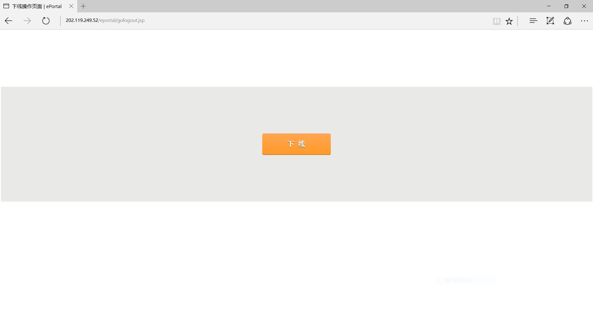
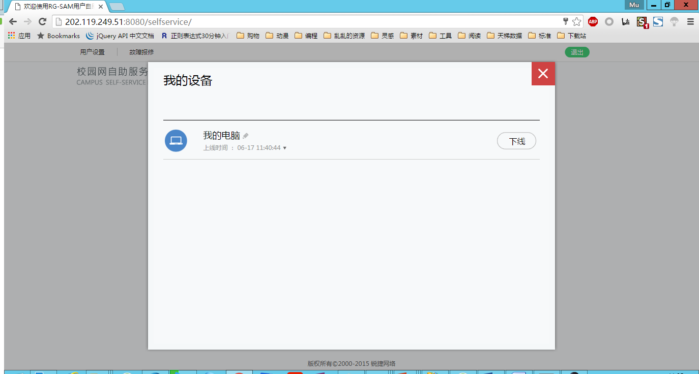
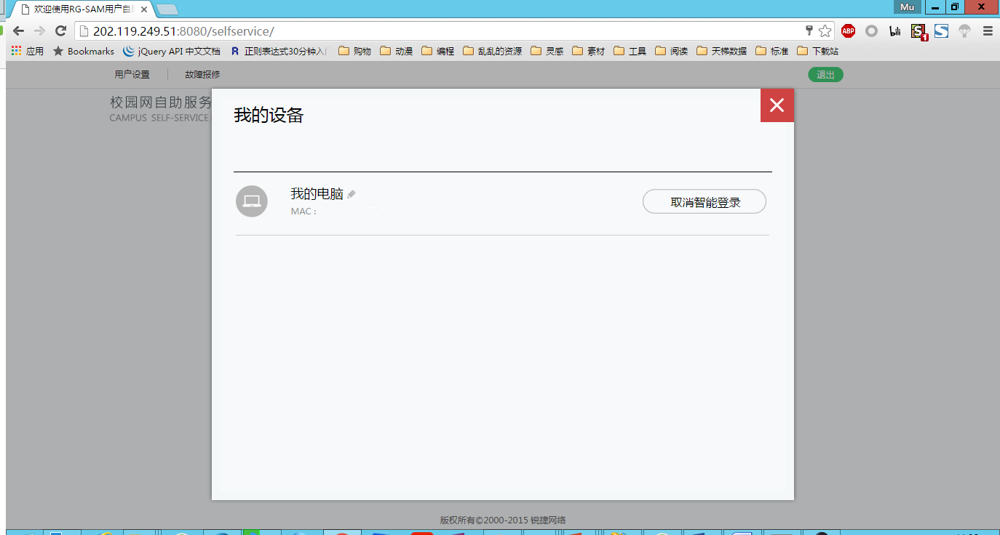
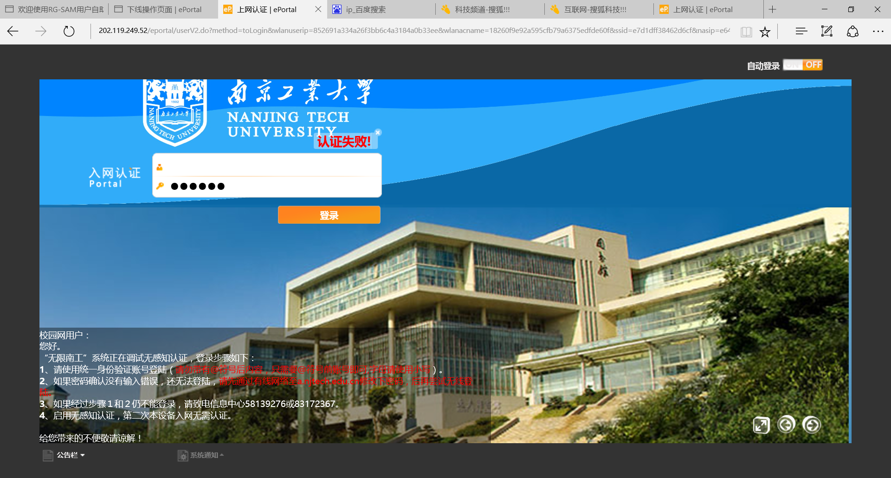

各位老师、同学大家好，感谢您使用无线南工，针对大家在使用中已发现的问题，我们整理了这个简单的帮助文档，本文档会针对大家反馈的问题持续更新。您的满意是我们追求的目标，您的肯定是我们前进的动力！
如何退出登录
如果你不小心关掉了退出界面，你可以通过 这个链接 退出
 启用无感知登陆后如何退出登录，并取消无感知登陆
启用无感知登陆后可以在 这个链接 处管理自己已经登陆或者启用了无感知登陆的设备取消无感知登陆，需要先下线该设备，然后再取消无感知登陆
 注意：我们发现了在某些设备上，无法自己下线自己，进而无法取消无感知登陆，您可能需要换另外一台电脑登陆上述管理界面进行操作
启用无感知登陆后出现无法上网的问题
在刚启用无感知登陆的时候，您可能遇到访问网站时仍然跳转到了登陆页，但是登陆会失败，这是因为首次启用无感知登陆后需要您断开网络重新连接导致的
 遇到认证超时设备无响应的问题
我们在某些下线操作后遇到了此类问题，同样需要您断开网络，并重新连接

发现错误？想参与编辑？ 在 南工在线 | 无线南工板块 反馈！